whale-大筛子
题目：
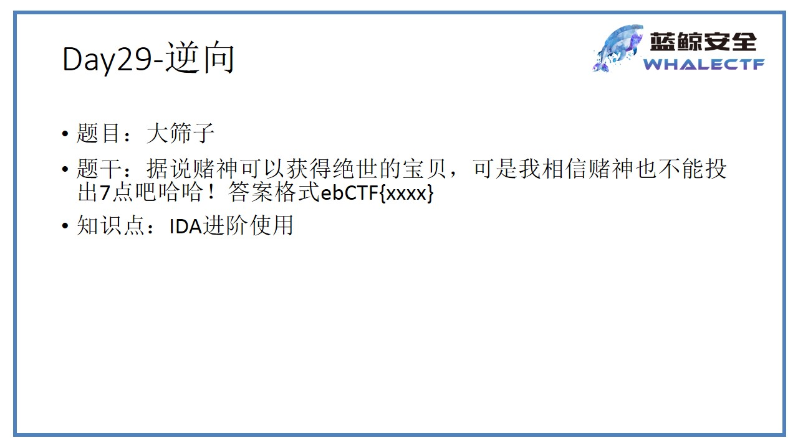
0x01 解题步骤
0x1 方法1 静态分析
0x01 DIE分析
分析dice.exe，发现是32位程序，用32位IDA打开
0x02 找到flag输入语句
-
找入口点
-
winMain()
-
shift+F12找感兴趣的字符串
-
找到感兴趣的字符串，双击进入
-
查看交叉引用，双击到winMain函数里
-
确定flag的输出语句
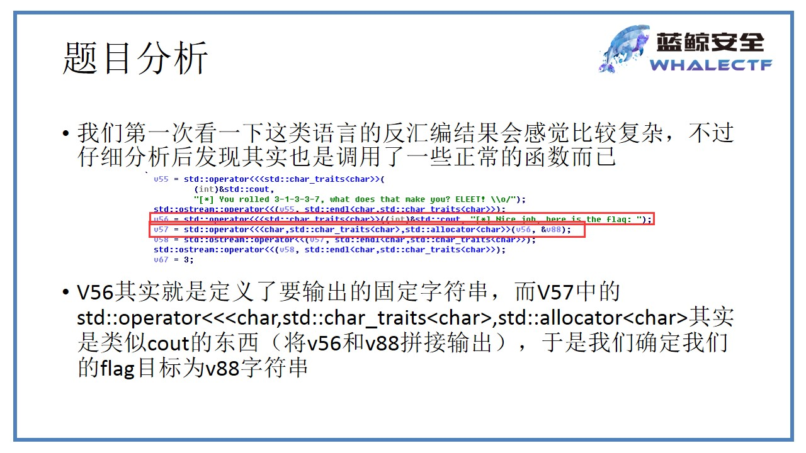
0x3alt+t搜索v88的位置
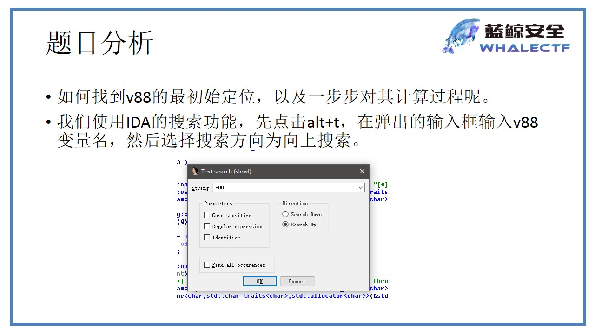
0x4 找到v88赋值的地方
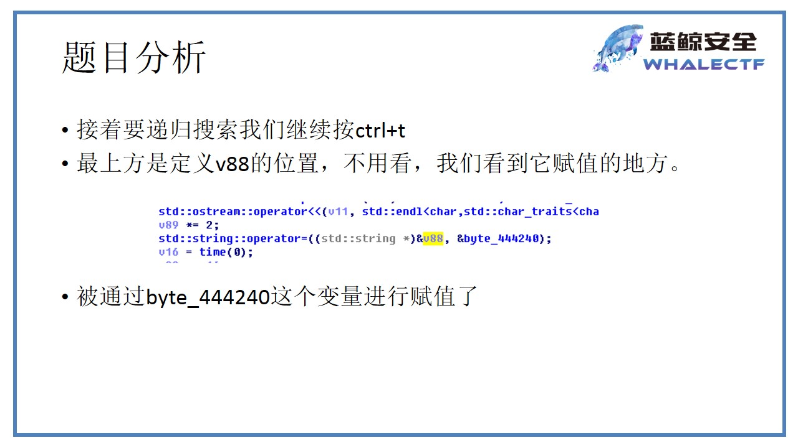
0x5 变量导出
双击变量，把byte_444240处的变量导出（shift+e）
注意：不能把结尾的00也复制出来
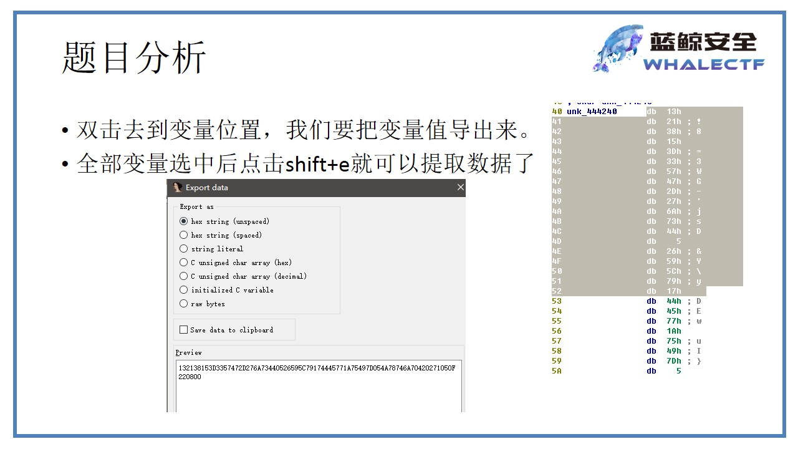
0x6 查看v88的变化
找到最后一句检测v88的语句
0x7 查看v99，并导出
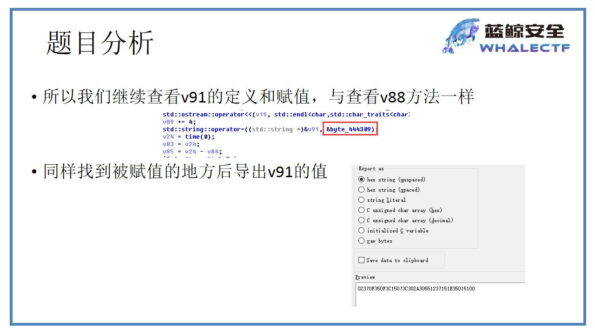
0x8 再次跟踪v89和v90的变化
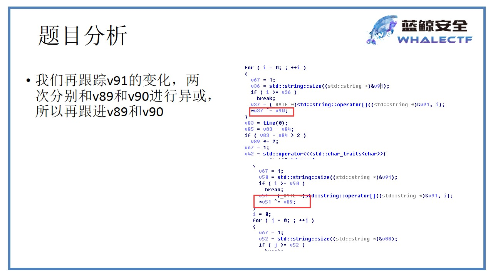
0x9 v89的变化
反调试：time()函数计算延时大小
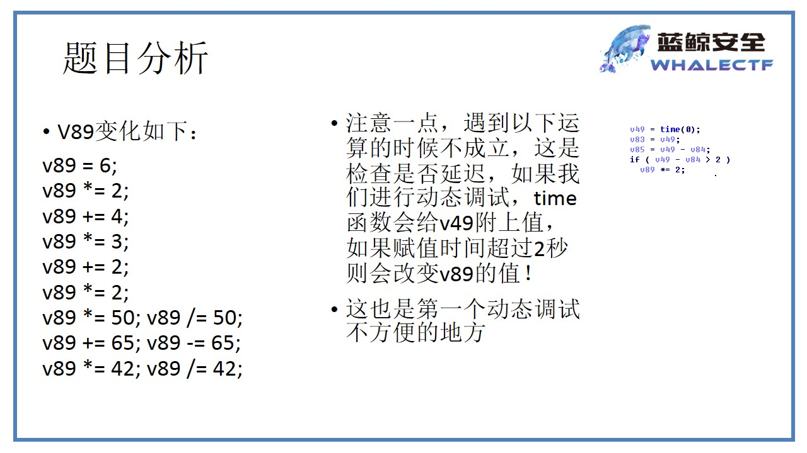
0x10 V90的变化
反调试技巧：idDebuggerPresent()
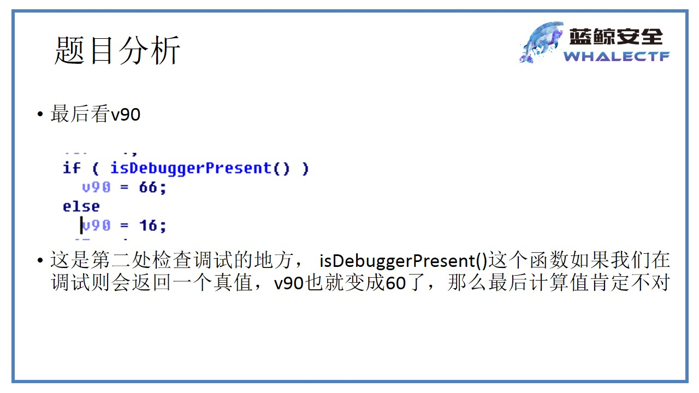
0x11 利用python给出结果
- 反汇编部分源代码
for ( j = 0; ; ++j )
{
v67 = 1;
v52 = std::string::size((std::string *)&v88);
if ( j >= v52 )
break;
v64 = (_BYTE *)std::string::operator[]((std::string *)&v88, j);
v53 = (_BYTE *)std::string::operator[]((std::string *)&v91, i);
*v64 ^= *v53;
++i;
v54 = std::string::length((std::string *)&v91);
if ( i >= v54 )
i = 0;
}
- python
# -*- coding:utf-8 -*-
def foo():
v89,v90=100,16
v91="02370F350F3C15073C302A30551237151E350151"
v88="132138153D3357472D276A73440526595C79174445771A75497D054A78746A70420271050F2208"
v91=[ord(i) for i in v91.decode('hex')]
for i in xrange(len(v91)):
v91[i]^=v89^v90
v88=[ord(i) for i in v88.decode('hex')]
res=""
for i in xrange(len(v88)):
res+=chr(v88[i]^v91[i%len(v91)])
print res
pass
if __name__ == '__main__':
foo()
print 'ok'
0x2 方法2 IDA流程图法
-
程序使用cmp指令来对比骰子的点数是否与规定的一致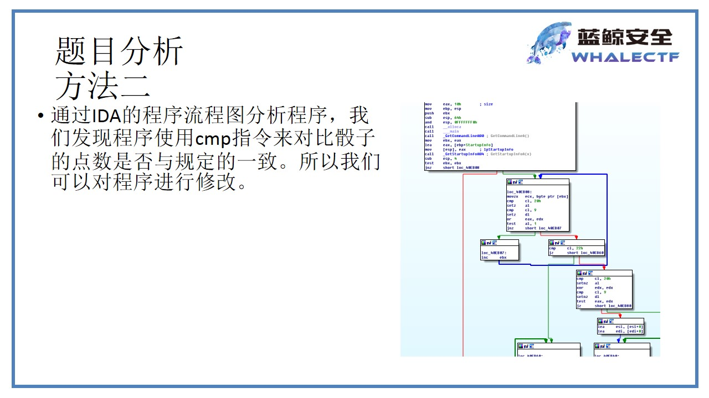
-
程序通过判断
[ebp+var_5c]中的值是否为3进行跳转
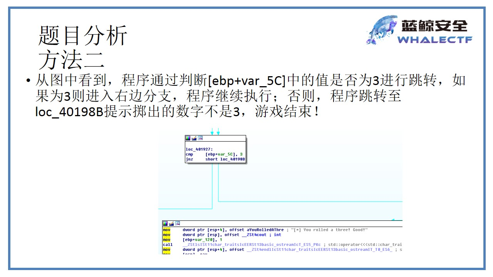
- 通过修改跳转指令来增大成功几率将
jnz替换为jz
修改方法：options/general/disassemly/number of opcode bytes设置为16，使其显示指令的机器码
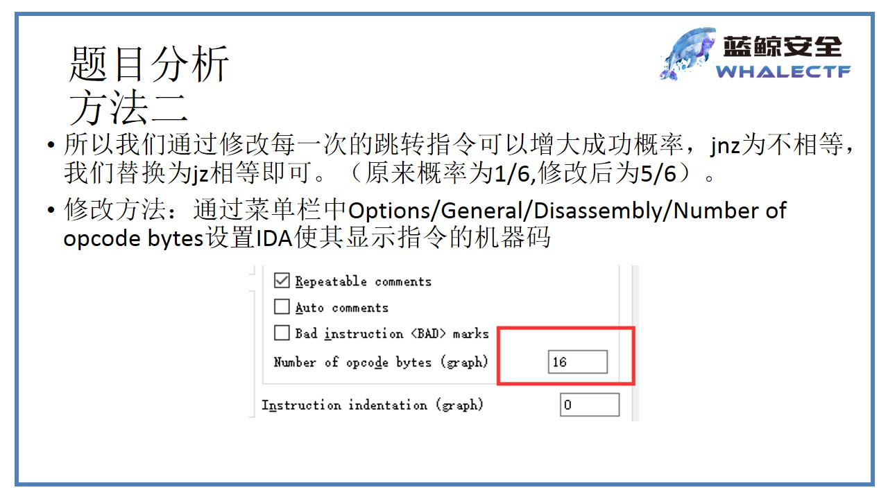
- JNZ的机器码为：75，修改为74（JZ）
修改方法：Eidt/Patch program/change byte
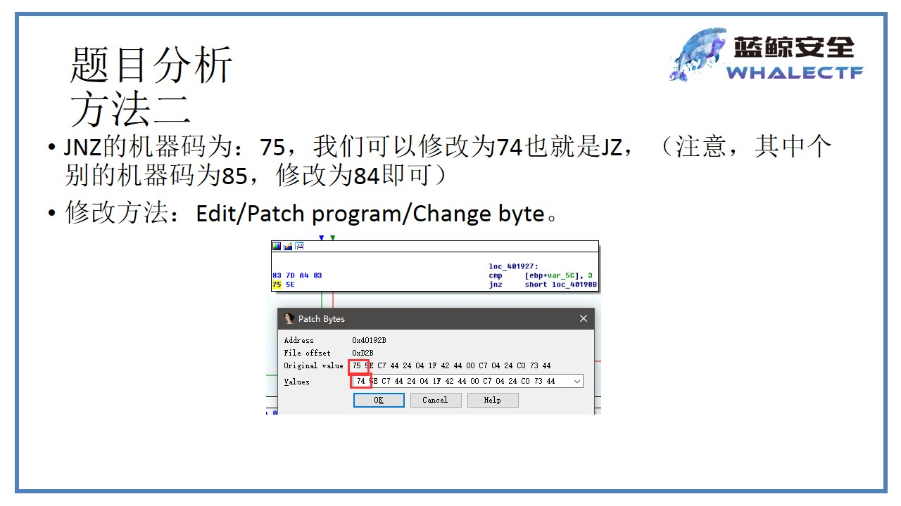
- 依次将几个判断都修改掉，然后保存修改
方法：edit/patch program/apply patches to input file
注意：得保存项目
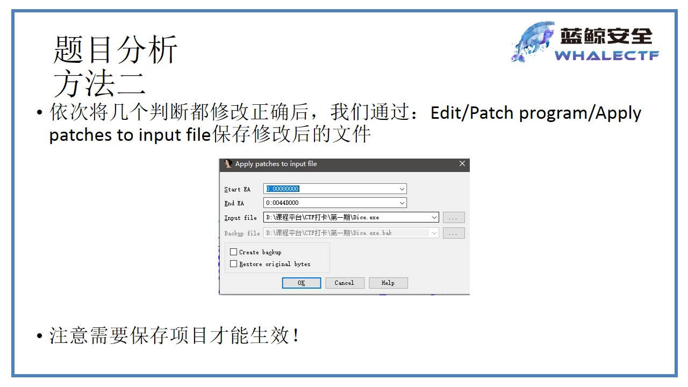
- 运行得到flag